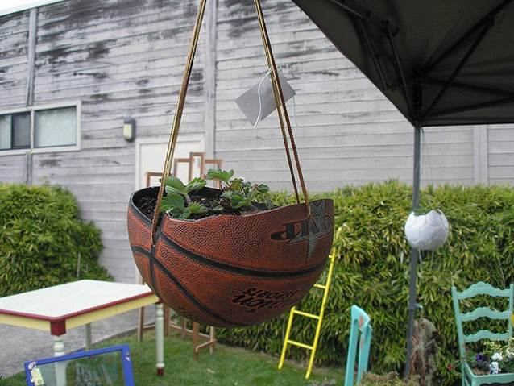
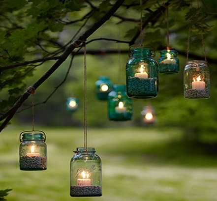
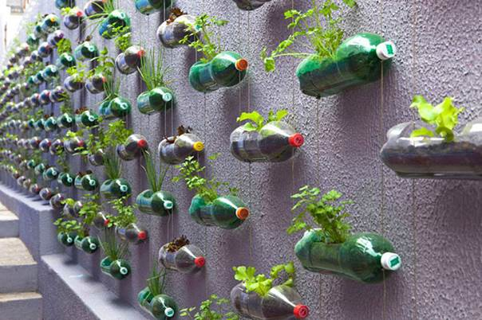
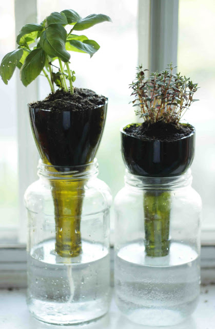
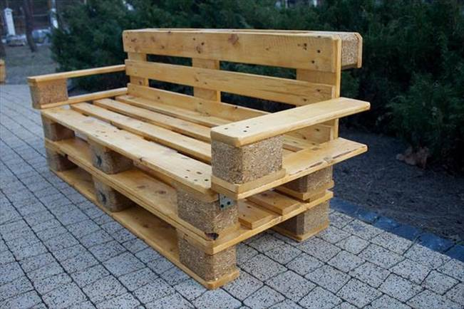
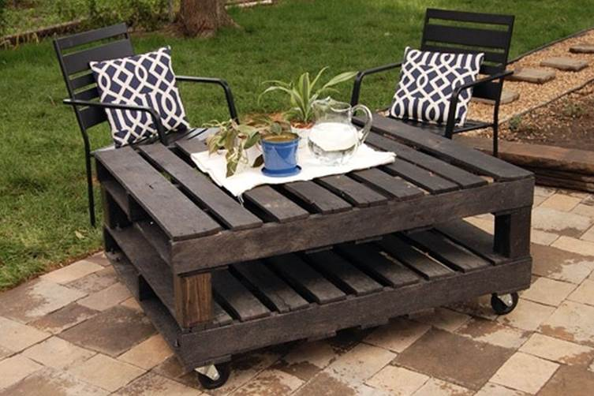

| саксия от спукана топка |
||
|  | Вашето дете е спукало поредната топка? Не се ядосвайте, направете саксия за градината от нея!
1. първо изрежете кръг в едната част на топката. 2. После я напълнете с пръст 3. Засадете цвете. 4. в зависимост от това дали искате да е висяща или стояща, сложете въжета и я окачете, или просто и сложете чинийка! Вече имате нова саксия! |
|
| Висящи свещници от буркани |
||
| Сигурно в мазето имате безброй празни буркани, които сте се зарекли да изхвърлите?
Не ги изхвърляйте, може да се възползвате от тях, като си направите висящи свещници на балкона. Романтично, нали?! 1. Насипете пясък или много дребни камъчета на дъното на буркана. 2. завържете здраво канап около гърлото на буркана, после направете още една примка за закачване. 3. пуснете свещ вътре, запалете я и се насладете на уютен балкон! |
 | |
| стенни саксии от бутилки |
||
|  | Бутилките - на пръв поглед боклук, могат да бъдат чудесна декорация! 1. Изрежете едната половина на бутилката. 2. Прокарайте въжета през двата края на всяко шише, за да ги закачите на тавана или стената. 3. Напълнете "саксията" с пръст, заседете цвете и се насладете на красотата на балконската градина! |
|
| Самонапояваща се система |
||
| Забравяте да поливате цветята редовно или не ви остава време?
Ето една проста напоителна система с буркан и бутилка 1. Изрежете едната половина на бутилката. 2. Напълнете шишето с пръст. 3. Напълнете буркана с вода и се наслаждавайте на безгрижно отглеждане на цветята! |
 | |
| балконска мебел от палети |
||
|  | Обикновено палетите се използват за подпалки за зимата...но защо?
Направете нещо красиво от тях - например балконска мебел! 1. Отрежете палета на няколко части както е на картинката. 2. Заковете отделните части. 3. След това изшлайфайте, пожелание боядисайте, но може да се насладите на естествения цвят на чама! |
 |